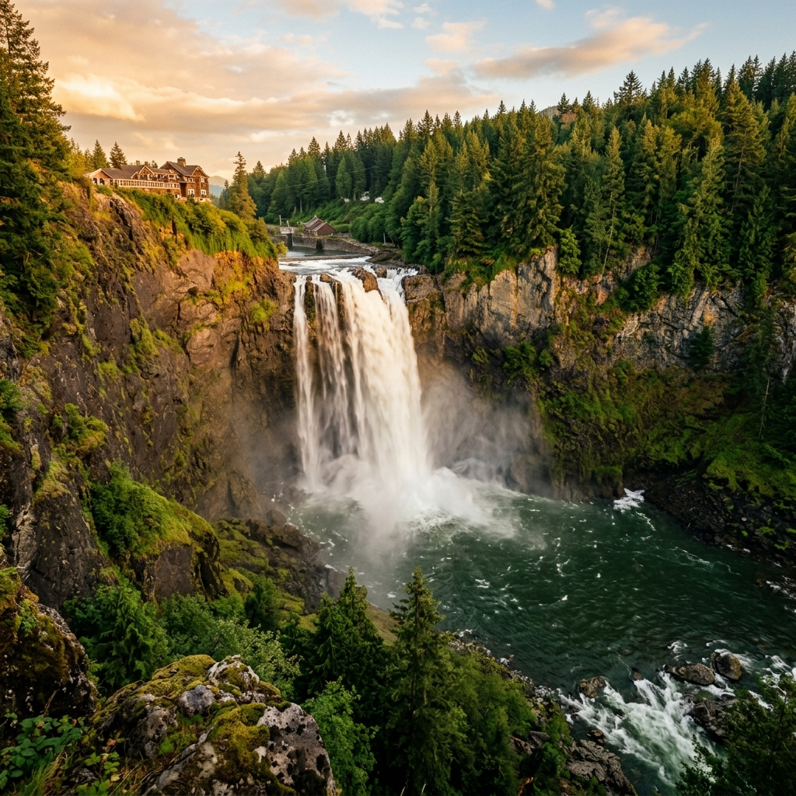
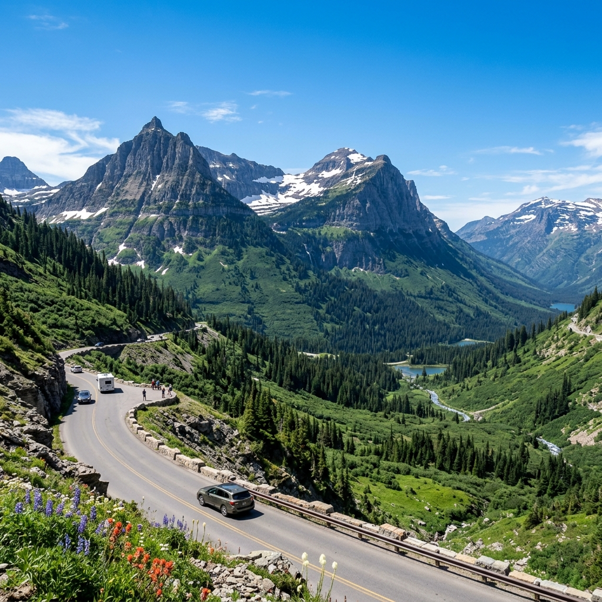
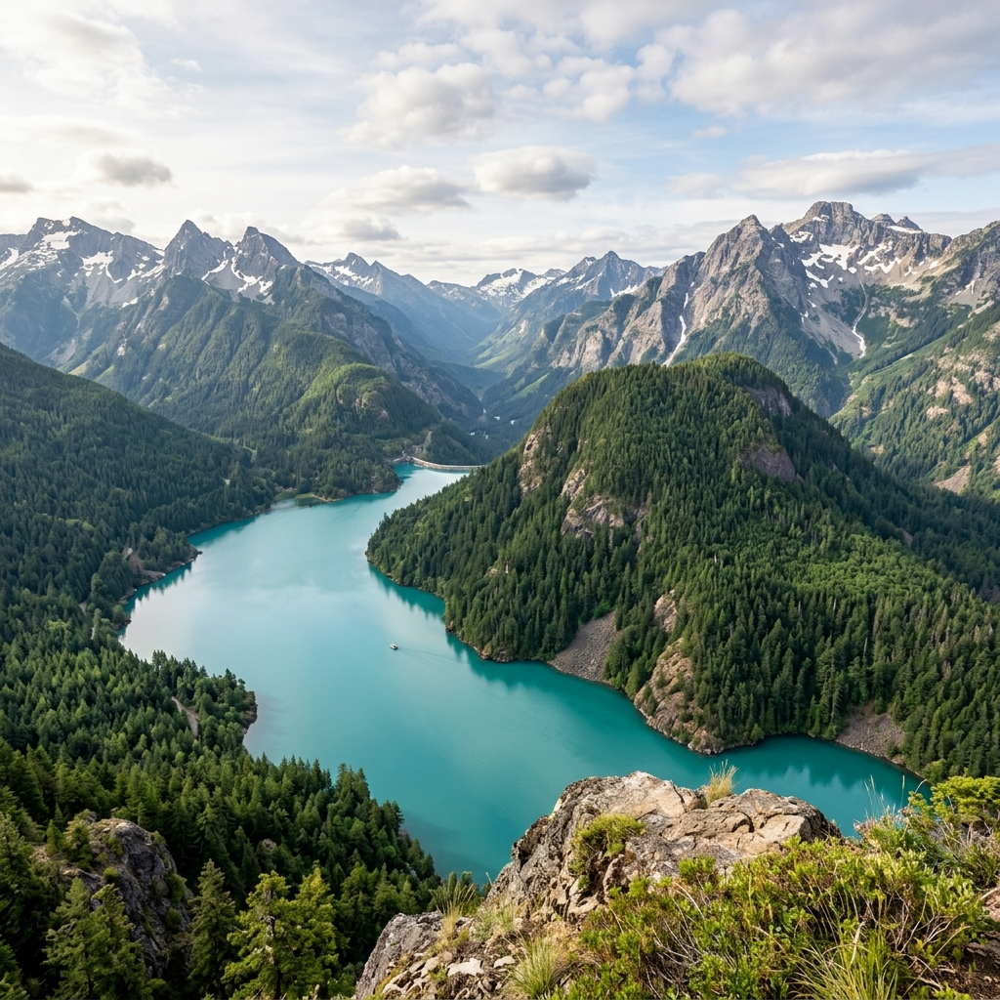
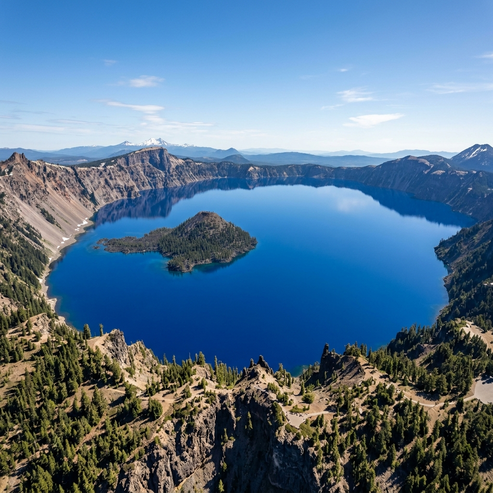

June 20–26 · Redmond, WA Base · 5 Adults + 2 Kids · Jeep Grand Cherokee L · 2,200 Miles Over 6 Days
*Visualized path shows chronological drive order starting June 20th.
| Date | Destination Leg | Sightseeing Focus | Driving Duty & Distance |
|---|---|---|---|
| Jun 20 (Fri) | Redmond → Snoqualmie → Glacier NP | Snoqualmie Falls golden hour. Prepare night drive bags. | Overnight Drive 550 mi · 8.5 hrs |
| Jun 21 (Sat) | Glacier NP (MT) → North Cascades | Going-to-the-Sun Road, Logan Pass, Avalanche Lake. | Overnight Drive 500 mi · 8.5 hrs |
| Jun 22 (Sun) | N. Cascades → Mt Rainier → Crater Lake | Diablo Lake sunrise. Paradise alpine hike & waterfalls. | Overnight Drive 540 mi · 10.5 hrs total |
| Jun 23 (Mon) | Crater Lake → Portland → Cannon Beach | Sunrise blue lake. Multnomah Falls. Cannon Beach Sunset. | Evening Hotel Stay 360 mi · 6.5 hrs |
| Jun 24 (Tue) | Cannon Beach → Olympic NP → Redmond | US-101 North Coast. Hurricane Ridge high meadow. | Home Base Return 360 mi · 8 hrs (incl ferry) |
| Jun 25 (Wed) | Lake Sammamish & Alki Beach | Rest, kid play, beach splash. Sunset Seattle skyline. | Local Rest 40 mi · 1 hr |
| Jun 26 (Fri) | Redmond Base → Airport | Relaxing breakfast, packing, midnight flight home. | Departure 30 mi · 45 mins |




Fully vetted family-friendly Indian dining spots sorted by road-trip leg.
Crucial guidelines for overnight driving, vehicle cargo management, and toddler care.
Estimated itemized budget for 5 adults + 2 kids (toddler mostly free) for activities, gas, and food.
| Category | Description | Est. Cost (USD) |
|---|---|---|
| 🎟️ America the Beautiful Pass | Covers Glacier, North Cascades, Rainier, Crater Lake, Olympic NP. | $80 |
| 🏨 Hotel in Cannon Beach / Astoria | One night stay for 7 people (family suite or 2 rooms) on June 23. | $350 |
| ⛴️ Edmonds-Kingston Ferry | Vehicle fee + passengers for Olympic NP return. | $57 |
| ⛽ Fuel / Gas (2,200 miles) | ~18 mpg for Jeep Grand Cherokee L, ~$4.20/gallon. | $520 |
| 🍛 Food & Dining (7 Days) | Restaurants, road-trip snacks, and packed picnics. | $900 |
| 🅿️ Parking Fees | State parks (Sammamish) and trailheads. | $30 |
| 🛍️ Miscellaneous & Emergencies | Coffee stops, kids' snacks, small gear. | $200 |
| TOTAL ESTIMATE | All-inclusive road trip loop expenses | $2,137 |